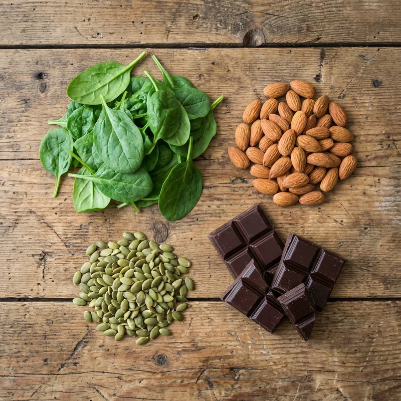

Triple Magnesio: Absorción Óptima para Salud Integral
El triple magnesio es un suplemento avanzado que combina tres formas biodisponibles de magnesio para proporcionar beneficios completos a múltiples sistemas del cuerpo. Este mineral esencial participa en más de 300 reacciones enzimáticas y es fundamental para la energía, función muscular, salud ósea y equilibrio nervioso.
¿Qué es el Triple Magnesio?
A diferencia de los suplementos de magnesio convencionales que contienen una sola forma, el triple magnesio combina de manera sinérgica tres de las formas orgánicas más biodisponibles: bisglicinato de magnesio (magnesio quelado con glicina que cruza fácilmente la barrera hematoencefálica, ideal para calmar el sistema nervioso), malato de magnesio (para optimizar la producción de ATP muscular) y citrato de magnesio (con excelente solubilidad y absorción general). Al utilizar transportadores y vías de absorción intestinal distintos en los enterocitos, esta combinación reduce la competencia por los receptores intestinales, maximizando la absorción general sin provocar los efectos laxantes de dosis masivas de una sola sal.
Las Tres Formas de Magnesio
Las formulaciones de triple magnesio típicamente incluyen:
- Citrato de magnesio: Excelente biodisponibilidad, apoya la digestión y energía
- Bisglicinato de magnesio: Muy suave para el estómago, ideal para función muscular y nerviosa
- Malato de magnesio: Combate la fatiga y apoya la producción de energía celular

Esta combinación permite que cada forma trabaje en diferentes áreas del cuerpo simultáneamente, maximizando los beneficios mientras minimiza posibles efectos secundarios digestivos.
Beneficios para la Salud
La suplementación con triple magnesio proporciona múltiples beneficios respaldados por investigación científica:
- Función muscular: Previene calambres y mejora la recuperación post-ejercicio

- Energía: Esencial para la producción de ATP, la moneda energética del cuerpo
- Salud ósea: Trabaja junto con el calcio para mantener huesos fuertes
- Sistema nervioso: Promueve la calma y mejora la calidad del sueño
- Salud cardiovascular: Estudios muestran que el magnesio puede reducir la presión arterial [1]
- Control glucémico: Mejora la sensibilidad a la insulina y reduce el riesgo de diabetes tipo 2 [2]
- Prevención de migrañas: Reduce la frecuencia e intensidad de las migrañas [3]
Magnesio Malato: Un Componente Clave
El malato de magnesio merece atención especial por su papel en el ciclo de Krebs, el proceso mediante el cual las células producen energía. Esta forma es particularmente beneficiosa para personas que experimentan fatiga crónica o practican ejercicio intenso regularmente.
Cómo Complementar con Otros Suplementos
El triple magnesio funciona sinérgicamente con otros suplementos. Por ejemplo, combínalo con gominolas de vinagre de manzana para potenciar el control metabólico, o con hoja de morera para un enfoque integral del control glucémico.
Para la salud articular, el magnesio complementa perfectamente productos como Hondrodox al relajar los músculos que rodean las articulaciones, reduciendo la tensión y mejorando la movilidad.
Deficiencia de Magnesio: Señales y Síntomas
La deficiencia de magnesio es sorprendentemente común y puede manifestarse como calambres musculares, fatiga, irritabilidad, problemas de sueño, debilidad muscular y palpitaciones cardíacas. Factores modernos como el estrés crónico, dietas procesadas y ciertos medicamentos aumentan el riesgo de deficiencia.
Dosis y Momento Óptimo
La dosificación típica de triple magnesio oscila entre 200-400 mg diarios, aunque las necesidades varían según la edad, sexo y nivel de actividad física. Muchas personas encuentran beneficioso tomarlo por la noche, ya que promueve la relajación y mejora la calidad del sueño.
Para atletas o personas físicamente activas, dividir la dosis entre mañana y noche puede optimizar tanto la energía diurna como la recuperación nocturna. Es importante mantener una buena hidratación, especialmente si también consumes bebidas isotónicas después del ejercicio.
Fuentes Alimentarias vs. Suplementos
Aunque el magnesio se encuentra en alimentos como vegetales de hoja verde, frutos secos (incluyendo almendras usadas en chocolates con almendras), semillas y legumbres, la agricultura moderna ha reducido el contenido mineral del suelo, disminuyendo el magnesio en los alimentos. La suplementación asegura niveles óptimos.

Referencias Científicas
- Zhang X, et al. (2016). "Effects of Magnesium Supplementation on Blood Pressure". Hypertension. NIH. PubMed
- Hruby A, et al. (2015). "Magnesium Intake and Risk of Type 2 Diabetes". Diabetes Care. PubMed
- Mauskop A, Varughese J. (2012). "Why all migraine patients should be treated with magnesium". J Neural Transm. PubMed
💚 Encuentra Triple Magnesio en Amazon
Invierte en tu salud con un suplemento de triple magnesio de alta calidad.
Ver en Amazon →